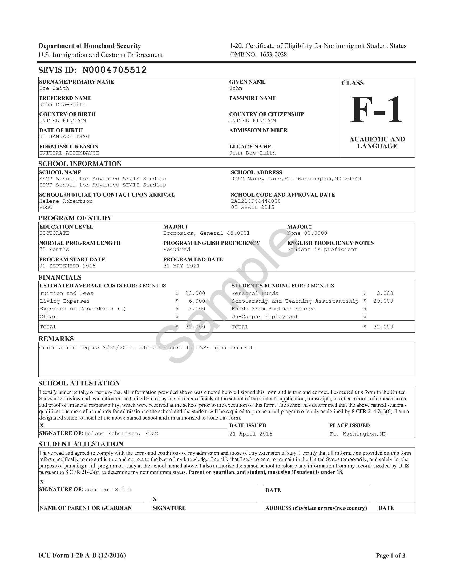

Getting the admission to your dream school is usually just half of the journey. The other half is what you do in order to make sure you get to your school the following fall. This process all starts with getting the I-20.
The I-20 is a document sent by your school after accepting the offer to attend in the fall. It is meant for F-1 visa students (All students other than Mastercard scholars) and contains information about a student’s F status. For Students who apply for the J-1 visa (Mastercard Students) a for called DS-2019 is the equivalent of the I-20. The I-20 is mandatory for every entry into the United States as a student.

Only after getting the I-20/DS-2019 can you apply for a Visa.
Visa Application
APPLIKESHENI YA VISA
The application starts with filing the Online Non-Immigrant Visa Application(DS-160) form which contains all your personal information. You need to have a digital passport photo for this. The DS-160 Website has the photo requirements.
Only after you have filled the DS-160 can you go to the embassy webpage and apply for a visa by scheduling an appointment
here
There are two fees one is required to pay: The SEVIS fee and the Visa appointment fee and another fee of around kSH.4000 when your visa is approved. They are a total of roughly $420(Ksh.43,000).
What to take to the Visa Interview:
- Passport
- I-20
- DS-160 confirmation page
- Proof of SEVIS registration and fee payment
- Your KCSE leaving Certificate.
Tip: Get to the Embassy an hour before your scheduled appointment time.
During the interview show interest to come back home after your studies.
If your Visa is approved you will leave your passport and I-20 at the embassy and get it back in a weeks’ time. You will get it at the preferred DHL location you filled in when applying for the visa online.
Once you have the Visa stamp you’re good to go.
In case you’re intending to leave the Airport (in other countries) during your layovers then you will need to get a transit visa for that country.
For you to register for your classes you need submit proof of immunization against some diseases that vary from State to State so you will need to get an immunization form from your school and make sure to meet the deadlines.
You can get immunized at City Hall in Nairobi. It is way more affordable.
With all that done you can proceed and book your flight knowing that the earlier you book the cheaper it is. Some airlines have regulations for some items so it’s up to you to read about the airline before you book your flight
Got questions?
UNA MASWALI?
If after browsing the website you feel that any of your questions have been unanswered, please feel free to reach out to us via the links provided below or
email us.
Goodluck on your quest for greatness!